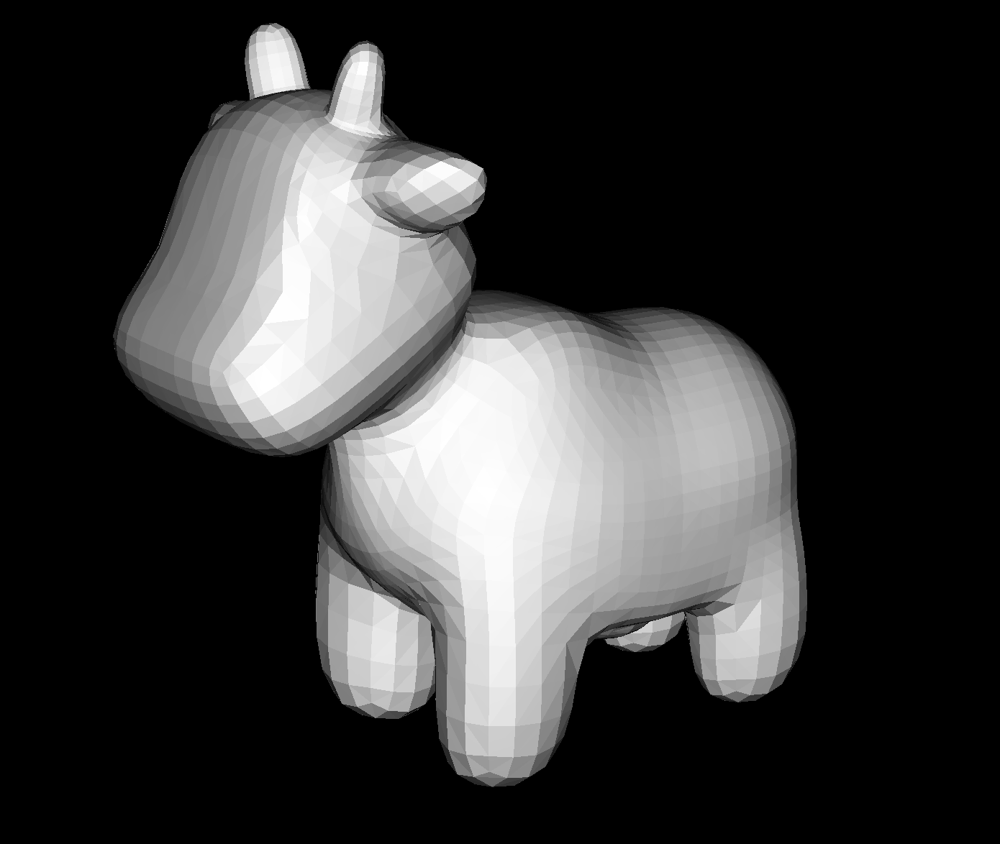
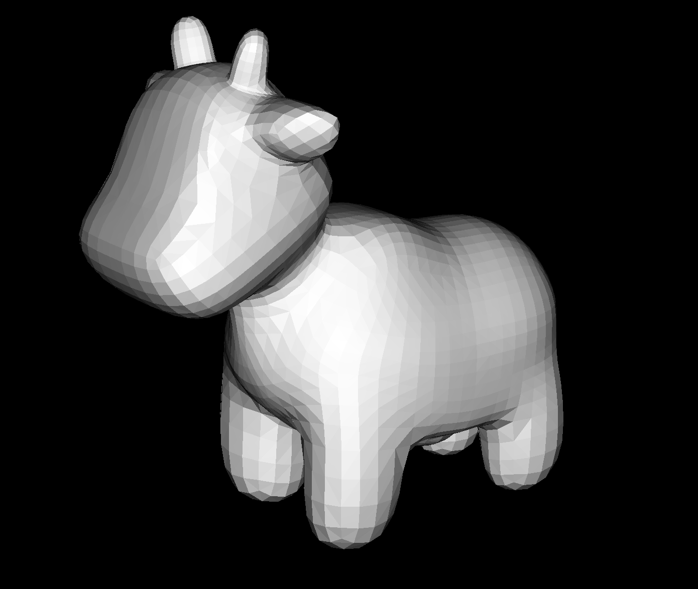

What is loop subdivision?
Sometimes, we may want to increase the number of polygons in our mesh to smooth out jagged edges and create a more smoothly curved surface, specifically by adding more polygons to areas where faces meet at sharp angles. This is called mesh upsampling. One approach to rounding out these edges is loop subdivision for triangle meshes, which consists of dividing each triangle into 4 by connecting the midpoints of each side, then updating the positions of vertices as follows:
-
For a vertex that existed in the old mesh, we interpolate between the original position of that vertex and the average of all of its neighboring vertices in the original mesh. To be precise, we weight the original position of the vertex by $1-nu$, where $n$ is the degree (number of neighboring vertices) of the vertex and $u$ is $\frac{3}{16}$ if $n = 3$, otherwise $\frac{3}{8n}$. Then we weight the sum of the positions of the neighbor vertices by $u$.
-
For a vertex that was added in the creation of the new mesh (essentially a vertex that used to be the midpoint of an edge), we assign its position based on the four vertices involved in splitting the edge (in the original mesh) the vertex is the midpoint. We add $\frac{3}{8}$ times the positions of the two endpoints of the edge, and $\frac{1}{8}$ times the positions of the two other vertices that form the two triangles with the relevant edge.
Here is a diagram to show what these updated positions look like geometrically:

This overall has the effect of pushing new vertices slightly outwards, while pulling old vertices in, which smooths out harsh edges and introduces some new curvature.
How do we implement it?
Our implementation was essentially split into 5 steps:
- First, iterate over all vertices currently in the mesh (the "old" vertices) and compute what its new position will be in the upscaled mesh. Store this value in the
newPositionfield of the vertex. - Then, iterate over all edges currently in the mesh and compute what the position of the vertex that will be created by splitting this edge should be. Store this value in the
newPositionfield of the edge. - Split every old edge in the mesh (don't create new edges then split them too, or we'll be stuck in an infinite loop). While we're doing this, we also update any new edges we create (edges that are actually created by the edge split operation, not just the result of a pre-existing edge being split in two) to keep track of their new status in the
isNewfield. - Flip any new edge (determined in step 3) that connects a new vertex and an old vertex. After this step is complete, we have subdivided every triangle in the manner described in the previous section.
- Update every vertex to its new position as calculated in steps 1 and 2.
Wait, this works?
It may seem surprising that steps 3 and 4 actually do divide every triangle in the 4-1 fashion that we described conceptually above. However, we can just consider an arbitrary triangle in the mesh; we split its three edges in some arbitrary order.
In this diagram, we split the red outer edge first giving us the red edge through the triangle, then we split the blue and green outer edges in any order giving us the other blue and green edges. The first edge we split will create a new edge that connects an old vertex (the one between the green and blue edges) and a new vertex (the one in the middle of the red edge). Then, the other two edges will connect exactly as they're supposed to in order to subdivide the triangle into 4 triangles. Now, all we have to do is flip the red inner edge and we'll split the triangle as desired; the red inner edge will now connect the pure blue vertex and pure green vertex, which is exactly what we wanted to happen, and we've divided the mesh like we were supposed to.
Debugging woes
We initially had a bug where some vertices' positions were getting set to 0; this was because we didn't realize that a new vertex's halfedge may not point to the edge that stored the vertex's new position, which means it was just getting set to 0 instead because the relevant edges hadn't had their "newPosition" field set.
So, when we found a new vertex (denoted by the isNew flag) and tried to check the relevant edge for its newPosition field by checking the vertex's halfedge's edge, we sometimes found a blank newPosition field and set the vertex's position to 0, which was not great.
Once we realized this, we implemented a nice trick that got around this problem entirely.
In particular, we set the vertex's newPosition field during the edge split operation (where we have immediate access to both the vertex and the edge that we're splitting). At the end, we don't have to search for the correct edge anymore; we just set all vertices' positions to their newPosition field.
Notes and observations on smoothness
In general, objects will turn smoother after being upsampled with loop-subdivision. Below are three sets of upsampled meshes:
 


Above: the teapot, cow, and torus mesh after being subdivided several times. The teapot was subdivided twice, and the torus and cow were subdivided 3 times. Of note is the large amount of movement in the originally sharp edges of the torus.
We see that sharp edges especially are pushed inwards by quite a large distance, due to them being far from their neighbors, and thus their neighbors have a stronger relative effect on their location. As shown in the next section, preprocessing these corners and edges by splitting their neighboring edges reduces the distance from other vertices for the vertices that experience the largest relative movement, which reduces this shrinking effect.
Why does my symmetric cube turn asymmetric?
When upsampling the cube as is, we notice a bit of asymmetry, displayed below:
Above: the original cube mesh displayed at 4 level of subdivision. The last image, which is a picture of the cube at a different rotation shows the asymmetry.
This naturally arises due to the nature of the calculation of the new vertex positions as a weighted average of their positions and their neighbors positions. We can imagine the updated position of a vertex as each neighbor vertex "tugging" on the position of the vertex, shrinking it in towards the origin a little bit (for a convex piece of the surface). Since this formula preserves either $\frac{7}{16}$ of the original position for a vertex with degree 3 or $\frac{5}{8}$ of the position when the degree is greater than 3, asymmetries arise when there is a mix of vertices with degree 3 and greater in the original mesh. Intuitively, a vertex with degree only 3 is "pulled harder" by its neighbors, creating the asymmetry. Additionally, since the neighbors of a vertex with degree 4 or 5 are inherently not centered around the axis containing the vertex and its opposing corner of the cube, the vertex's new position will be skewed slightly off axis. Moreover, the edge division algorithm further accentuates this asymmetry, since the two connecting neighbors are weighted more than the two non-connecting neighbors, we end up accentuating the asymmetry when splitting the edges. In this example, we clearly see the cube being skewed where the original vertices of degree 3 have been pulled in further than the original vertices of degree 4 or greater, resulting in an asymmetry.
To fix this, we can take two approaches: the first is to simply split all the face-crossing edges of the original mesh. By doing this, visually we see that the mesh has the symmetries of a cube — all corner vertices have degree 6, and all face are identical. Thus, each corner vertex is pulled symmetrically towards the center as they all have the same degree, and they are not pulled off-axis, as the 6 points are equally distributed along the corner-to-corner axis of the cube. This implementation is demonstrated on the left below. Another way to do this is to flip the edges, leading to two opposing corners having degree 6 each, and the others all having degree 4. This will result in a cube with 1 3-fold axis of corner-to-corner rotational symmetry, demonstrated on the right below. However, this does not solve the off-axis distribution of the points for the vertices of degree 4, resulting in a shape with no reflectional symmetry. Depending on the desired goals, this may or may not be what is intended with a cube.
Left: The cube mesh preprocessed with face-edge splitting displayed at 4 levels of subdivision. The bottom image shows it from a different angle to show that it has retained the symmetries of a cube. Right: The cube mesh preprocessed with face-edge flipping displayed at 4 levels of subdivision. The bottom image shows it from a different angle to show that it retains an axis of rotational symmetry but has no mirror symmetries.
Notice how in the example where the cube was split rather than flipped, the corners experience a relatively smaller movement inwards, as they are now closer to their neighbors. Had the mesh been further subdivided symmetrically, the shrinking effect would have been further reduced, as shown below:

Overall, the lesson to take away is that even if the original mesh defines a shape, it's possible that the result after levels of subdivision is asymmetric, if the vertices are not all symmetric with respect to each other. The edges leading into vertices will each "tug" on that vertex, and the end result will be heavily influenced by any vertex asymmetries.